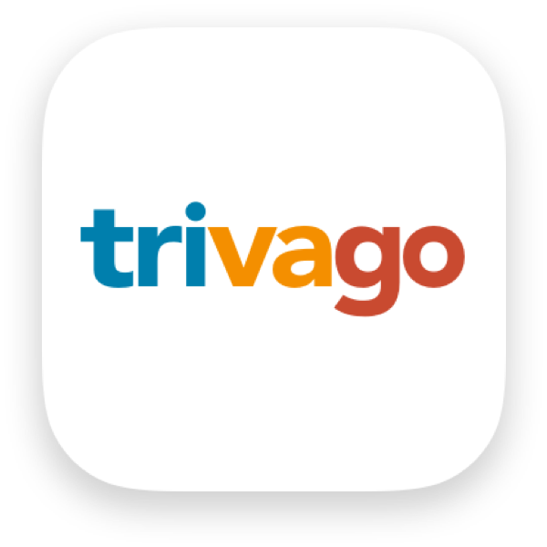
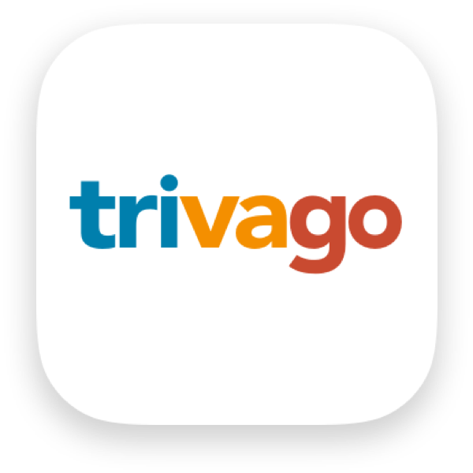

Add an even more personal touch to your travel itinerary.
Just select your interests and preferences, and Concierge will do the searching and curating for you.
When planning long-term trips that require two or more lodging options, modern travelers seldom have the time and motivation to actively navigate through different apps to map out and compare accommodations that align with their budget and various locations throughout their journey.
Concierge is a mobile app that curates a list of the best fit lodging options, all sourced from leading travel sites, for users based on their interests and needs. By creating a personalized travel itinerary that also allows users to book multiple accommodations at once, Concierge circumvents the long process of searching for places that best fit users' interests.
UX Designer (student)
3 weeks (Aug 2020)
Adobe XD, InVision, Miro, Adobe Photoshop

Just select your interests and preferences, and Concierge will do the searching and curating for you.

Wield the power to create organized itineraries for any occasion, whether it be for an upcoming trip or for a dream vacation.

Quickly view accommodations and any places of interests altogether on a map or list, and add them to your itinerary or bookmark them for later.

When time is money, you shouldn’t be wasting it flipping through search result after result.
This project was not only my first UX/UI Design Bootcamp challenge but my first attempt at playing the role of a UX Designer! During the research phase, a fellow classmate and I conducted user interviews together, synthesizing our research findings into an affinity map and user persona.
We were then responsible for our own individual project using the data we collected. Thus, I was solely responsible for the subsequent design and testing phases of this project, with a heavy emphasis on prototyping, visual design, and iterating designs based on user feedback.
Our first task upon receiving the challenge of designing a travel planning mobile app was to narrow down the scope into a topic we felt had opportunities to explore. We decided on the experience of booking accommodations for long-term travel, and arrived at four objectives to help guide us through the research process:
With our research objectives in mind, we conducted ten one-on-one remote interviews over Zoom with our target demographic: working-class adults with schedules that alotted time for long-term trips spanning at least 4 days. We organized our results into an affinity map to further examine our audience's goals, needs, motivations, and frustrations when it came to planning for travel.

Based on user interviews, we discovered that:
It was insightful to learn about our interviewees' definition of travel, what it means to them, and how they navigate these newly defined parameters of traveling, especially during a pandemic. We synthesized our discoveries into a user persona which not only kept us grounded throughout the remainder of the project, but served as a reminder as to why we were doing it:
Throughout our user interviews, we learned about the different mobile apps travelers were familiar with to search for and book accommodations. We conducted a competitor analysis with Booking.com and Trivago to evaluate how these commonly used travel apps operated before we began brainstorming possible solutions.
 

At the time of exploration, we discovered a few missed opportunities:
Based on user research and competitive analysis findings, we felt there was an opporunity in creating an app that personalized and streamlined the planning experience for users, allowing them to easily find and book a variety of accommodations based on their interests and duration of travel. With that in mind, it was time to put the pen to paper!
Now, it was time for me to fully take the reins of this project and begin the brainstorming process. I used the "I Like, I Wish, What If..." method to freely ideate any possible solutions I could think of. After accessing all of my ideas, I landed on three feasible features to work on:
Unfortunately, "Airbnb nap stations" did not make the cut, however, each of the features mentioned above addressed the pain points discovered during the user research phase: lack of transparency regarding fees, and the nuisance of switching between different apps to find information relevant to booking accommodations, especially for long-term travel. To demonstrate a scenario in which each feature is utilized, I created a user journey map that highlighted each stage and touchpoint:
I generated a user flow to make sense of the user journey map. The user flow emphasized the process of planning, booking, and organizing multiple accommodations throughout different locations during a week-long road trip. In Valerie’s scenario, she is embarking on a weeklong road trip with her family from Seattle to San Francisco and needs multiple lodging options along her travel route that could accommodate her family.

Since the concept of this mobile app includes sharing a repository of accommodations, I didn't want users to feel overwhelmed looking for lodging options. To make searching feel more personalized, engaging, and streamlined, a brief, preliminary interests survey was added to the onboarding process. By doing so, the process of combing through information relevant to accommodations, such as location, price, pictures, and things to do nearby that interests the user (priorities discussed during the user research phase) could be mitigated.
The sketches were a rough draft to demonstrate the feature of booking multiple accommodations all at once for a long-term trip such as the roadtrip that Valerie is taking. To test the efficacy of this feature, I converted the sketches into lo-fi wireframes via Adobe XD, and InVision to test the prototype.
After two weeks of researching, ideating, and designing, it was time to test the decisions I made. I conducted four remote usability tests over Zoom with the lo-fi prototype using InVision. Since it was my first time coordinating usability tests, I was thoroughly surprised at the results, and learned many key insights from the feedback I received:
The Explore tab on the navigation bar leads to the home page but 3 out of 4 users felt confused by the wording, tapping on it when asked to browse search results.
A lot of explaining was involved to articulate how the app works and what it is used for. The design should be able to help users understand the processes and intentions of the app from the beginning.
All of the users hesitated during the overnight stays portion and felt confused because they didn’t know of any locations unless they pulled up a map to see the route. When planning a road trip, most users stated that they’d like to know the distance from start to end before planning the in-between.
Selecting favorites from search results to add to the final itinerary felt like a convoluted process for most users. One user expressed they should have the option to add it straight to their final itinerary while another felt the process felt disconnected.
With the feedback I gained from usability tests, I created high-fidelity wireframes to reflect the necessary changes, as shown below:
Adobe XD was used to design and build this prototype.
Finding the right problem is more important than finding the right solution. I went into this project with a solution in mind, which only biased my views during the user research, definition, and ideation phases of this project. Always ask why!
Working alone on a project for so long certainly fogs one’s POV. What makes sense to you may not make sense to others. Keeping things simple provides a clear path to understanding for someone who’s seeing it for the first time and for the designer who’s seeing it for the millionth time.
I would like to conduct more usability tests for the hi-fi prototype (and for practice!), and expand on a few more sections to fully illustrate how Concierge can be used for other types of travel.